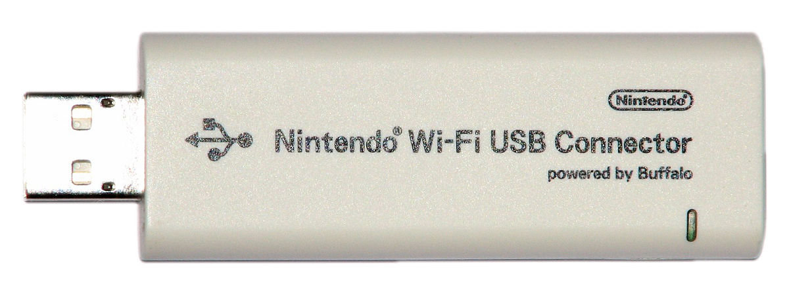

Note: This guide was originally written in 2013. I have no idea if it still works.

Recently I have been using my Nintendo DS a little more, since I have been playing my first Pokemon game (Pokemon White) and I wanted to play online with others. Playing online with the DS used to be simple, because it was compatible with the main network security standard at the time, WEP. If you didn’t have a Wifi network, you could also get the Nintendo Wifi connector above and connect it into your computer to make a network only visible to Nintendo systems. Using Nintendo’s software you can whitelist which consoles (Wii, DS, or 3DS) can connect to you.
Nowadays, things are more complicated. WPA and WPA-2 networks are the norm, which original DS systems are not compatible with. Even if you have a Nintendo DSi or DSi XL, only a few games take advantage of the system’s ability to work with WPA/WPA2. But what if you want to use the Wifi connector? Too bad, because it’s been discontinued and can only be found used on eBay for $50+. Why don’t we make our own that will be cheaper than Nintendo’s? I did, so here is a guide on how to make your own Nintendo Wifi USB Connector.
The guide may look long, but that is because I explain every single step in detail. If you have a decent knowledge of computers, you should be able to get through this in 10-20 minutes.
So now you have your shiny (or not) USB adapter meant to give wired computers the gift of wireless internet. You need to download the driver for your adapter and get it working. Windows might do it for you when you plug it in, if not you need to install it from a CD that came with it (if one did) or find one on the internet. There are so many ways this can be done, so I can’t help with this much. I might be able to help if you put your USB adapter model in the comments, but no promises.
Now that you have the drivers installed, we need to find out what the Device ID is. The Device ID is what your adapter identifies to Windows as, it’s like a name and every USB device has one. To find yours, open up the Control Panel and click on “Printers and other hardware”.
Make sure that your adapter is connected to your computer.
On the left of the Control Panel there should be a menu with an option called “System”. Click on it. You should see a window open that says ‘System Properties’ with some information about your computer. Click the Hardware tab and click on the 'Device Manager’ button.
This window lists every single device connected to your computer. Find the item named 'Network Adapters’ and click on the + next to it. You should see the adapter connected to your computer, for example I bought a D-Link adapter so mine says ’D-Link DWL-G122 REV.B’. Right-click on yours and select Properties. Now click on Details and select 'Device Instance ID’. It should read something like:
USB\VID_2001&PID_3C00\5&2E155997&0&8
But all we need is this part:
USB\VID_2001&PID_3C00
That is your device ID (not the one above, the one in your window). Write it down because you are going to need it later. That was the hard part, now for the easy stuff.
Now we need to get Nintendo’s USB software. Go to their page
and download the latest version (1.07 at the time of writing). Unzip it with your favorite zip software and place the Nintendo_WFC_USB folder somewhere easy to get to. This folder contains the installer for the Nintendo Wifi USB Connector software, which we are going to modify to work with our adapter.
Now we need to start modifying Nintendo’s software to work with our adapter. Open the folder you unzipped and you should see files like 'setup’ and a bunch of language files. Open the folder named 'U2G54’ inside of it. If you are using Windows 2000 or Windows XP, open the Win2000 folder. If you are using Windows Vista, open the WinVista folder. Now open the file named 'rt25usbap’ in Notepad. Look for the part that looks like this:
[Ralink]
; DisplayName Section DeviceID
; ———– ——- ——–
%Ralink.DeviceDesc% = RALINK.ndi, USB\VID_0411&PID_008B
;%Ralink.DeviceDesc% = RALINK.ndi, USB\VID_148f&PID_2570
and change it to look like this:
[Ralink]
; DisplayName Section DeviceID
; ———– ——- ——–
%Ralink.DeviceDesc% = RALINK.ndi, DeviceID
;%Ralink.DeviceDesc% = RALINK.ndi, USB\VID_148f&PID_2570
You see where I put the bold and underlined word DeviceID? That’s where you have to put your device ID you got earlier. After you finish that, save and close the file. Now go back to the NintendoWFCReg folder (the one with the setup in it) and open 'INST’ in Notepad. Now follow the directions for your Windows version. If you are using Windows XP, look for the words that look like this:
[WINXP]
0,Nintendo Wi-Fi USB Connector
1,USB\VID_0411&PID_008B
and change it to this:
[WINXP]
0,Nintendo Wi-Fi USB Connector
1,DeviceID
Again, put in your Device ID where the bold and underlined words are. If you are using Windows Vista, you have to find the part that looks like this:
[WINVISTA]
0,Nintendo Wi-Fi USB Connector
1,USB\VID_0411&PID_008B
and change it to this:
[WINVISTA]
0,Nintendo Wi-Fi USB Connector
1,DeviceID
Make sure to put in your Device ID where the bold and underlined words are. We are done with separate instructions for Vista and XP users, so both XP and Vista users have to find this part in the same file:
NO_COMPLETE0=BUFFALO WLI-PCI-OP
NO_COMPLETE1=BUFFALO WLI-U2-KAMG54 Bootloader
and change it to look like this:
;NO_COMPLETE0=BUFFALO WLI-PCI-OP
;NO_COMPLETE1=BUFFALO WLI-U2-KAMG54 Bootloader
Now we are done with that file, so save and close it. Now open the folder named 'SoftAP’ and open the file named 'DEVREMOVE’ (not the program, the config file. the program has an icon of a laptop, open the other file.) in Notepad. Look for the part that says:
[WLAN]
#WLA-U2-G54
PID0=USB\VID_0411&PID_008B
and change it to look like this:
[WLAN]
#WLA-U2-G54
PID0=DeviceID
Just like last time, replace the bold and underlined word with your Device ID. We are done editing files, now we have to edit the rest with a hex editor.
We are nearly done, but it’s always the toughest before it’s over. Now we have to use a Hex Editor to edit the rest of the files. These directions will be for the XVI32 Hex Editor you may have downloaded in the 'Things you will need’ section. Open XVI32 and go to File > Open and select the file named 'ICSAPI.DLL’.
Now you should see a bunch of random numbers and letters. This looks really complicated, but it’s basically the same thing as editing text files. Go to Search > Find and click the bubble next to 'Text String’. In the box type in USB\ and click OK. On the right side of the window, XVI should have found the Device ID for Nintendo’s connector. You need to replace it with your own. Use the arrow keys to select which box you need to modify and type the correct letter and number. Make sure the letters in the Device ID (if there are any) are capitalized. The hex editor is case-sensitive.
After you are done, save the file and go to File > Open again and choose the ICSAPI.DLL file in the folder named 'SoftAP’. Do the same thing as you did before and save it. After that go to File > Open and choose the file named WIFICON.DLL in the SoftAP folder and do the same thing again. After that you are done editing files, now time for the easy stuff!
Now you need to uninstall the drivers for your USB adapter, so we can use Nintendo’s instead. Open up the Control Panel and click on “Printers and other hardware”. Make sure that your adapter is connected to your computer. On the left of the Control Panel there should be a menu with an option called “System”. Click on it. You should see a window open that says 'System Properties’ with some information about your computer. Click the Hardware tab and click on the 'Device Manager’ button.
Find the item named 'Network Adapters’ and click on the + next to it. You should see the adapter connected to your computer, the same one you got the Device ID from. Right-click on yours and select Uninstall. This will uninstall the drivers for the adapter. When it’s all done, unplug the adapter from your computer.
Now that you have patched Nintendo’s software to use your adapter instead, it’s time to install it. Open the program named 'setup’ and select your language. After installing some stuff it will ask you to connect your Nintendo Wifi USB connector. Plug in your adapter. If you did everything right, the installer will install it’s own drivers and install the Nintendo Wifi software. If it can’t detect your adapter, you might have put in the wrong Device ID (I did this the first time). You could also try another USB port.
You can now use the Nintendo Wifi USB Connector program with your adapter! Now you can give your Nintendo DS, Wii, or 3DS a secure network of its own.
This guide was based off of this one from GBADev, but it is adapted for both XP and Vista systems as well as some other changes. A huge amount of credit goes to them.
{kind=link}